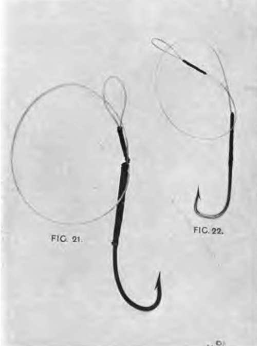
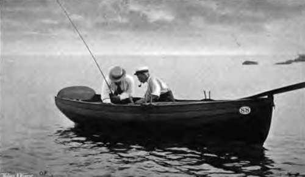

Mackerel Fishing. Part 2
Description
This section is from the book "Fishing", by Horace G. Hutchinson. Also available from Amazon: Fishing.
Mackerel Fishing. Part 2
For mackerel fishing in this way from a rowing-boat I should strongly recommend the use of a rod, a 10-feet trout-rod for preference. It imparts an element of sport to what is otherwise a not very sportsmanlike style of fishing, and, what is more, it may under certain conditions of wind and water, enable the fisherman to hook many fish that come short at the bait and that would consequently, but for the elastic spring of the top joint, go free. The rest of the tackle is not complicated. As to the best kind of winch, or reel, fishermen are divided in their opinions. There are many who swear by the wooden Nottingham reel, that free-running, optional-check contrivance which was evolved by some genius on the banks of Trent, and which is, like many another modern innovation, a good servant but a bad master. In the hands of a maitre, delicately manipulated as I have seen it manipulated by Mr. Alfred Shaw, the famous Notts cricketer, who once gave me some much-needed lessons in its use, the Nottingham reel is a marvellous aid to fishing. Bungled, allowed to overrun and generally abused, as I have seen it here and there, in boats and on piers, it is a curse and a delusion, and I would rather any day have a lively conger in my boat than an angler with a Nottingham winch and a hundred yards of line that he did not know how to manage. The Nottingham winch offers undoubted advantages in sea-fishing, where the great length of line constantly in use, either to reach deep water or to trail at a distance behind the boat, takes an unconscionable time winding in on the older bronze winches of smaller barrel. With a sea-rod indeed, which I use, as will presently be described, for catching pollack in deep water, there is nothing to beat a good Nottingham winch with optional check. It must be of the best, and it must have certain special qualities to fit it for use in salt water. Given these, and a man who can make it do exactly what he wants, it makes the odds against the fish very heavy. There is, however, a place for everything, and I do not think that the place for a Nottingham reel is on a trout-rod. At best, it would have to be small in the barrel, and this must necessarily lessen the rapidity with which the line can be wound up. Nor does the average trout-rod balance half so well with a wooden Nottingham winch as with the smaller and heavier bronze check winch more commonly used. Such a winch I prefer, and it may hold fifty or sixty yards of very fine dressed line. Such a line, if properly dried after use and given an occasional soaking in fresh water, should last the season out at least. The rest of the gear for this fishing consists of six feet of single gut, a couple of inches of lead foil, weighing perhaps an ounce, which may be pinched on the line just above the point at which it is attached to the gut, and a single hook of the size figured here (Fig. 21).
Specimen Hooks
65.- Commencing Operations.
The choice of hook is largely a matter of opinion. As with most other things, with guns and cameras and rods, less depends on the tools than on the workman. One man pins his faith to round-bend hooks, another to square-bend; one kills more fish with a small, another with a large hook; one will have none but eyed hooks, another prefers the flattened shank used by the deep-sea fishermen. It is largely a matter of faith, and, just as many a man, who shoots brilliantly with his own gun, will go utterly off the mark with a better weapon which is strange to him, so, if a fisherman has accustomed himself to one pattern of hook, he will, if suddenly compelled to use another, lose fish after fish. Nor are one's preferences in these matters immune from change. There was a time when I used square-bend hooks above all others, but I first found the advantage of a round-bend in live-bait fishing for bass, and have since used the round hook for everything. The rod being put together, the reel fixed in place, the line through the rings, even the hook and gut attached and lead twisted up small and pinched on the line where previously indicated, there remains the question of bait. The best bait is undoubtedly, as already mentioned, a small ovoid piece of flesh and skin, chiefly skin, which is cut from either side of the tail, each fish supplying two baits. These baits, which go by a different name at almost every twenty miles along the coast, and which are known as "lasts" in Sussex, as "floats" in Devon, and as "snades" in Cornwall, are very deadly when properly cut, and one will, under favourable conditions, last long enough for the capture of a dozen mackerel, as the fish is too quickly hooked, at any rate from a sailing-boat, to do much damage to the bait. The " float"- I retain this name out of deference to Devon, where I am writing these notes-requires careful cutting. The requisite materials are a newly caught mackerel, a very keen, broad-bladed knife, such as kept by the fishermen for such uses, and an ordinary wine cork. The mackerel being first killed, not only on humane grounds, but also, it is to be feared, because its movements would make cutting the bait a very difficult job, is held in the left hand, with either side uppermost. The blade of the knife, with its edge towards the tail fin, is then gingerly inserted in the skin a couple of inches from the root of the tail fin, and, by diminishing the pressure as the blade works along, it is, with a little practice, easy enough to cut out a very thin bait, semi-circular at the start and gradually tapering to a long and threadlike point. Care is taken not to cut into the flesh, for the bait should be little more than skin, so that it works and spins well in the water. The " float" must not be torn abruptly from the mackerel, or its shape will be spoilt; it must be quietly, but firmly, detached with a turn of the knife. But of what use to give these laboured explanations, which not a hundred diagrams would elucidate half so well as watching a fisherman do the job half-a-dozen times! Once cut from the fish, the rest is easy. The " float" is laid on the cork, skin side downwards, and the point of the hook, which must be very sharp, is pushed through the tail, or pointed end. Then the bait is pushed with the thumb and finger down over the barb of the hook until it hangs from the bend, and, that being done, the baited hook may be let down over the side and line paid out from the reel until the hook is twenty or thirty yards astern.
Continue to:
- prev: Chapter XXVI. Section I. Sea-Fishing From Boats: Mackerel Fishing
- Table of Contents
- next: Mackerel Fishing. Part 3